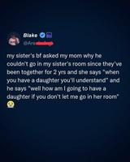

0

0
0
0
Apple has reportedly asked Google to look into "seting up servers" for a Gemini-powered upgrade to Siri that meets Apple's privacy standards. The Verge reports: Apple had already announced in January that Google's Gemini AI models would help power the upgraded version of Siri it delayed last year, but The Information's report indicates Apple might lean even more on Google so it can catch up in AI.
The original partnership announcement said that "the next generation of Apple Foundation Models will be based on Google's Gemini models and cloud technology," and that the models would "help power future Apple Intelligence features," including "a more personalized Siri." While the announcement noted that Apple Intelligence would "continue to run on Apple devices and Private Cloud Compute," it didn't specify if the new Siri would run on Google's cloud. Apple's Private Cloud Compute is not only underpowered but it's also underutilized in its current state, notes 9to5Mac, "with the company only using about 10% of its capacity on average, leading to some already-manufactured Apple servers to be sitting dormant on warehouse shelves."
Read more of this story at Slashdot.
Paramount Skydance plans to combine HBO Max and Paramount+ into a single streaming platform following its acquisition of Warner Bros. Discovery. "As we said, we do plan to put the two services together, which today gives us a little over 200 million direct-to-consumer subscribers," said David Ellison, the company's CEO. "We think that really positions us to compete with the leaders in the space." The deal still needs regulatory approval. The Washington Post reports: He added that Paramount didn't want to make changes to the HBO brand. "Our viewpoint is HBO should stay HBO," Ellison said, noting that his favorite HBO product is "Game of Thrones." If Justice Department regulators allow the deal to go through, it would place recent HBO Max hits, such as "The Pitt" and "A Knight of the Seven Kingdoms," alongside Paramount offerings including "South Park" and "Yellowstone." "They built a phenomenal brand," he said. "They are a leader in the space, and we just want them to continue doing more of it."
The deal to buy Warner Bros., valued at about $110 billion, will almost surely attract regulatory scrutiny from the Justice Department because -- without divestments -- it places major swaths of the film, television and news industries under one roof: Warner Bros. and Paramount studios, HBO Max and Paramount+, and CBS and CNN would all have the same parent company. Ellison expressed confidence on the call that the deal wouldn't face hurdles with regulators.
Read more of this story at Slashdot.
An anonymous reader quotes a report from Ars Technica: Charter Communications, operator of the Spectrum cable brand, has obtained Federal Communications Commission permission to buy Cox and surpass Comcast as the country's largest home Internet service provider. Charter has 29.7 million residential and business Internet customers compared to Comcast's 31.26 million. Buying Cox will give Charter another 5.9 million Internet customers. The FCC approved the deal on Friday, but the companies still need Justice Department approval and sign-offs from states including California and New York.
Opponents of Charter's $34.5 billion acquisition told the FCC that eliminating Cox as an independent entity will make it easier for Charter and Comcast to raise prices. But the FCC dismissed those concerns on the grounds that Charter and Cox don't compete directly against each other in the vast majority of their territories.
FCC Chairman Brendan Carr's primary demand from companies seeking to merge has been to eliminate diversity, equity, and inclusion (DEI) programs and policies. In a press release (PDF), the Carr-led FCC said that "Charter has committed to new safeguards to protect against DEI discrimination," and that Charter's network-expansion plans will bring "faster broadband and lower prices" to rural areas. The merger was approved one day after Charter sent a letter to Carr outlining its actions to end DEI. Charter offers broadband and cable service in 41 states, while Cox does so in 18 states.
Read more of this story at Slashdot.
Over the weekend, Windows Latest noticed that Microsoft's official Copilot Discord server began automatically blocking the term "Microslop." As shown in a screenshot, any message containing the word is automatically prevented from posting, and users receive a moderation notice explaining that the message includes language deemed inappropriate under the server's rules. From the report: Windows Latest found that sending a message with the word "Microslop" inside the official Copilot Discord server immediately triggers an automated moderation response. The message does not appear publicly in the channel, and instead, only the sender sees the notice stating that the content is blocked by the server because it contains a phrase deemed inappropriate.
Of course, the internet rarely leaves things there. Shortly after Windows Latest posted about Copilot Discord server blocking Microslop on X, users began experimenting in the server with variations such as "Microsl0p" using a zero instead of the letter "o." Predictably, those versions slipped past the filter. Keyword moderation has always been something of a cat-and-mouse game, and this isn't any different.
What started as a simple keyword filter quickly snowballed into users deliberately testing the restriction and posting variations of the blocked term. Accounts that included "Microslop" in their messages first got banned from messaging again. Not long after, access to parts of the server was restricted, with message history hidden and posting permissions disabled for many users.
Read more of this story at Slashdot.
Japan will effectively ban the in-flight use of power banks starting in mid-April after a "recent series of alarming incidents," reports the Asahi Shimbun. From the report: Currently, mobile batteries in Japan are classified as "spare batteries" and are prohibited in checked luggage. For carry-on bags, those exceeding 160 watt-hours are banned, while passengers are limited to two units for those over 100 watt-hours. There is no quantity limit for batteries of 100 watt-hours or less. The new rule will limit passengers to a total of two spare batteries, including power banks.
While there is no limit on the number of spare batteries below 100 watt-hours, carrying power banks exceeding 160 watt-hours will remain prohibited. Power banks will be capped at two units regardless of power capacity. Additionally, charging them on board will be prohibited, and it will be "recommended" that passengers not use them at all. As a result, domestic airlines are expected to require passengers to stop using power banks, cementing the effective ban on in-flight use.
Read more of this story at Slashdot.
An anonymous reader quotes a report from TechCrunch: One day not long ago, a founder texted his investor with an update: he was replacing his entire customer service team with Claude Code, an AI tool that can write and deploy software on its own. To Lex Zhao, an investor at One Way Ventures, the message indicated something bigger -- the moment when companies like Salesforce stopped being the automatic default. "The barriers to entry for creating software are so low now thanks to coding agents, that the build versus buy decision is shifting toward build in so many cases," Zhao told TechCrunch.
The build versus buy shift is only part of the problem. The whole idea of using AI agents instead of people to perform work throws into question the SaaS business model itself. SaaS companies currently price their software per seat -- meaning by how many employees log in to use it. "SaaS has long been regarded as one of the most attractive business models due to its highly predictable recurring revenue, immense scalability, and 70-90% gross margins," Abdul Abdirahman, an investor at the venture firm F-Prime, told TechCrunch. When one, or a handful, of AI agents can do that work -- when employees simply ask their AI of choice to pull the data from the system -- that per-seat model starts to break down.
The rapid pace of AI development also means that new tools, like Claude Code or OpenAI's Codex, can replicate not just the core functions of SaaS products but also the add-on tools a SaaS vendor would sell to grow revenue from existing customers. On top of that, customers now have the ultimate contract negotiation tool in their pockets: If they don't like a SaaS vendor's prices, they can, more easily than ever before, build their own alternative. "Even if they do not take the build route, this creates downward pressure on contracts that SaaS vendors can secure during renewals," Abdirahman continued.
We saw this as early as late 2024, when Klarna announced that it had ditched Salesforce's flagship CRM product in favor of its own homegrown AI system. The realization that a growing number of other companies can do the same is spooking public markets, where the stock prices of SaaS giants like Salesforce and Workday have been sliding. In early February, an investor sell-off wiped nearly $1 trillion in market value from software and services stocks, followed by another billion later in the month. Experts are calling it the SaaSpocalypse, with one analyst dubbing it FOBO investing -- or fear of becoming obsolete. Yet the venture investors TechCrunch spoke with believe such fears are only temporary. "This isn't the death of SaaS," Aaron Holiday, a managing partner at 645 Ventures, told TechCrunch. Rather, it's the beginning of an old snake shedding its skin, he said.
Read more of this story at Slashdot.
The Library of Congress has restored Gugusse et l'Automate, an 1897 short by Georges Melies that likely features the first robot ever shown on film. Long thought lost, the reel was discovered in a box of decaying nitrate films donated from a Michigan family collection. NPR reports: The film, which can be viewed on the Library of Congress' website, depicts a child-sized robot clown who grows to the size of an adult and then attacks a human clown with a stick. The human then decimates the machine with a hammer.
In an Instagram post, Library of Congress moving image curator Jason Evans Groth said the film represents, "probably the first instance of a robot ever captured in a moving image." (The word "robot" didn't appear until 1921, when Czech dramatist Karel Capek coined it in his science fiction play R.U.R..)
"Today, many of us are worried about AI and robots," said archivist and filmmaker Rick Prelinger, in an email to NPR. "Well, people were thinking about robots in 1897. Very little is new."
Read more of this story at Slashdot.
alternative_right shares a report from ScienceAlert: According to a study of 38 adult human brains donated to science, superagers -- people who retain exceptional memory as they age -- have roughly twice as many immature neurons as their peers who age more typically. Moreover, people with Alzheimer's disease show a marked reduction in neurogenesis compared to a normal baseline. [...]
Led by researchers at the University of Illinois Chicago, the team set out to examine a variety of postmortem hippocampal tissue samples to see if they could identify markers of neurogenesis -- and if different groups had any notable differences. The brain samples were donated from five groups: eight healthy young adults, aged between 20 and 40; eight healthy agers, aged between 60 and 93; six superagers, aged between 86 and 100; six individuals with preclinical Alzheimer's pathology, aged between 80 and 94; and 10 individuals with an Alzheimer's diagnosis, aged between 70 and 93. The young healthy adult brain tissue was first analyzed to establish the neurogenesis pathways in the adult brain. Then, they analyzed 355,997 individual cell nuclei isolated from the hippocampus, searching for three different stages of cell development: Stem cells, which can develop into neurons; neuroblasts, which are stem cells in the process of that development; and immature neurons, on the verge of functionality. The results were striking.
"Superagers had twice the neurogenesis of the other healthy older adults," [says neuroscientist Orly Lazarov of the University of Illinois Chicago]. "Something in their brains enables them to maintain a superior memory. I believe hippocampal neurogenesis is the secret ingredient, and the data support that." That's an interesting result on its own, but the data from the individuals with preclinical Alzheimer's pathology and Alzheimer's diagnoses is where the real meat of the study sits. In the preclinical group, subtle molecular changes hinted that the system supporting new neuron growth was beginning to falter. In the Alzheimer's group, a clear drop in immature neurons was evident. A genetic analysis of the nuclei also showed that superager neural cells have increased gene activity linked to stronger synaptic connections, greater plasticity, and brain-derived neurotrophic factor, a critical protein for neural survival, growth, and maintenance. Taken together, these three things can be interpreted as resilience. The research has been published in the journal Nature.
Read more of this story at Slashdot.
Linn County, Iowa has adopted what may be one of the nation's strictest local zoning ordinances for data centers, requiring detailed water studies, formal water-use agreements, 1,000-foot residential setbacks, noise and light limits, and infrastructure compensation. "But seated beneath a van-sized American flag hanging from the rafters of the drafty Palo Community Center gymnasium, residents asked for even stronger protections," reports Inside Climate News. "One by one, they approached the microphone at the front of the gym to voice concerns about water use, electricity rates, light pollution, the impacts of low-frequency noise on livestock, and the county's ability to enforce the terms of the ordinance. Some, including Dorothy Landt of Palo, called for a complete moratorium on new data center development."
Landt asked: "Why has Linn County, Iowa, become a dumping ground for soon-to-be obsolete technology that spoils our landscape and robs us of our resources? While I admire the efforts of the Board of Supervisors to propose a data center ordinance, I would prefer to see all future data centers banned from Linn County." From the report: The county is already home to two major data center projects, operated by Google and QTS. Both are located in Cedar Rapids, Iowa's second-largest city, and are therefore subject to its laws. The new ordinance would apply only to unincorporated areas of the county, which make up more than two-thirds of its geographic footprint. [...] In drafting the ordinance, [Charlie Nichols, director of planning and development for Linn County] and his staff drew on the experiences of communities nationwide, meeting with local government officials in regions that have seen massive booms in data center development, including several counties in northern Virginia, the "data center capital of the world."
As data center development balloons, many communities that initially zoned the operations as warehouses or standard commercial users are abandoning that practice, Nichols noted. The extreme energy and water demands of data centers simply cannot be accounted for by existing zoning frameworks, he said. "These are generational uses with generational infrastructure impacts, and treating them as a normal warehouse or normal commercial user is just not working." [...] The Linn County, Iowa, ordinance goes one step further than tightening existing zoning rules. Instead, it creates a new, exclusive-use zoning district for data centers, granting county officials the power to set specific application requirements and development standards for projects. No other counties in the state have introduced similar zoning requirements, said Nichols. In fact, few jurisdictions nationwide have. [...]
From its first reading to final adoption, the ordinance has expanded to include language setting light pollution standards, requiring a waste management plan, including the Iowa DNR in the water-use agreement to address potential well interference issues and requiring an applicant-led public meeting before any zoning commission meetings. "I am very confident that no ordinance for data centers in Iowa is asking for more information or asking for more requirements to be met than our ordinance right now," said Nichols at the final reading. The Cedar Rapids Metro Economic Alliance has said that it strongly supports current and future data center development in the area. The new ordinance is not an effective moratorium, Nichols said. He said he "strongly believes" that a data center can be built within the adopted framework.
Read more of this story at Slashdot.
An anonymous reader quotes a report from CBC.ca: The B.C. government says this Sunday will be the last time British Columbians have to change their clocks. The province will be permanently adopting daylight time and the March 8 "spring forward" will be the last time change, Premier David Eby announced Monday. "We are done waiting. British Columbia is going to change our clocks just one more time -- and then never again," Eby said. Residents will have eight months to prepare for Nov. 1, 2026, when the clocks would have been turned back one hour, but will now remain the same. B.C.'s new time zone will be called "Pacific Time," according to the province. Further reading: Permanent Standard Time Could Cut Strokes, Obesity Among Americans
Read more of this story at Slashdot.
An anonymous reader quotes a report from the Washington Post: The Plain Dealer, Cleveland's largest newspaper, has begun to feature a new byline. On recent articles about an ice carving festival, a medical research discovery and a roaming pack of chicken-slaying dogs, a reporter's name is paired with the words "Advance Local Express Desk." It means: This article was drafted by artificial intelligence. "This article was produced with assistance from AI tools and reviewed by Cleveland.com staff," reads a note at the bottom of each robot-penned piece, differentiating it from those still written primarily by journalists. The disclosure has done little to stem the backlash that caromed across the news industry after the paper's editor, Chris Quinn, published a Feb. 14 column lamenting that a fresh-out-of-college job applicant withdrew from a reporting fellowship when they found out the position included no writing -- just filing notes to an AI writing tool.
"Artificial intelligence is not bad for newsrooms. It's the future of them," Quinn wrote, adding that "by removing writing from reporters' workloads, we've effectively freed up an extra workday for them each week." [...] Quinn, for his part, says his paper's use of AI to find, draft and edit stories is a success story that others must emulate if they want to survive. "It's a tool," he said in a phone interview last week. "If AI can do part of our job, then why not let it -- and have people do the part it can't do?" He added that the paper's embrace of technology -- including using AI to write stories summarizing its reporters' podcasts and its readers' letters to the editor -- is already boosting its bottom line, helping it retain staff at a time when other newspapers are shrinking or even shutting down. Just 130 miles east of Cleveland, the 240-year-old Pittsburgh Post-Gazette said in January that it will close its doors this spring.
Quinn, who has led the Plain Dealer's newsroom since 2013, said its newsroom has shrunk from some 400 employees in the late 1990s to just 71 today. Over the past three years, Quinn has implemented a suite of AI tools with various purposes: transcribing local government meetings, scraping municipal websites for story leads, cleaning up typos in story drafts, suggesting headlines and helping reporters draft follow-ups to articles they've already written. He said he is particularly pleased with an AI tool that turns podcasts by the paper's reporters into stories for the website, which he said generated more than 10 million page views last year. He has documented those efforts in letters to readers and sought their feedback. But the paper's latest experiment -- using AI to turn reporters' notes into full story drafts -- has aroused indignation online and anxiety within the paper's ranks.
Read more of this story at Slashdot.
Apple today announced the iPhone 17e with support for MagSafe and an upgraded A19 chip. The base model also gets a bump to 256GB of storage at $599, and Apple is equipping the device with its new scratch-resistant Ceramic Shield 2 glass that's supposedly 3x more durable than the 16e. Macworld reports: MagSafe would normally mean significantly faster wireless charging speeds too: the 16e is capped at 7.5W, whereas recent iPhones can wirelessly charge using MagSafe at up to 22W or even 25W. Unfortunately the iPhone 17e has not been given access to the full extent of MagSafe's powers in this regard, and has a limit of 15W. That's the same as MagSafe on the iPhones 12 through 15, and remains an improvement on the 16e, but is still disappointing. [...]
It was also expected that the 17e would get a new processor, as this is a standard upgrade for almost every refresh of almost every Apple product. The iPhone 16e came with an A18 chip; the 17 has an A19, which, according to Apple, "delivers exceptional performance for everything users do." Of course that depends on the user and their needs, and it's important to point out that, just like last year, Apple has chosen to use "binned" units of the chip in order to save money. Binned chips have failed manufacturing tests in some minor way and don't have the full complement of cores. [...]
And although the cameras are still disappointingly few in number -- one on the front and one on the back -- the wording for the portrait mode has been updated from "Portrait mode with Depth Control" (the same as on the iPhone 12) to "Next-generation portraits with Focus and Depth Control" (same as on the iPhone 17). This appears to highlight the fact that you can change the focus point. The 17e is available in white, black, and soft pink starting at $599.
Read more of this story at Slashdot.
South Korean tax authorities lost millions in seized cryptocurrency after publishing high-res photos of Ledger hardware wallets that clearly displayed the wallets' seed phrases, allowing an unknown party to drain the funds. Gizmodo reports: South Korea's National Tax Service seized crypto assets during recent enforcement actions against 124 high-value tax evaders, but now, a large chunk of that crypto cash has been lost. The operation originally resulted in the confiscation of crypto holdings worth about 8.1 billion won, or roughly $5.6 million. However, officials later issued a press release to showcase these efforts in recovering delinquent taxes, and the release included photographs of Ledger hardware wallets taken into custody along with handwritten notes that displayed the wallet seed phrases.
Those images attached to the press release turned out to be the critical error. High-resolution photos clearly showed the mnemonic recovery phrases, which serve as the master key for accessing the wallets. This exposure eliminated any protection provided by the offline cold storage on the Ledger devices. Possession of the seed phrase allows complete control, and anyone who knows the phrase can import it into software or another hardware wallet and initiate transfers without the original device.
In this case, an unknown individual who saw the photos published by law enforcement first added a small amount of ether to one of the addresses to cover Ethereum network gas fees necessary for outbound transactions. From there, they executed three transfers to move approximately 4 million Pre-Retogeum, or PRTG, tokens. At the time, those tokens carried a value of $4.8 million, but reporting from The Block indicates liquidating that much value from the holdings would have proven difficult due to market dynamics.
Read more of this story at Slashdot.
"At its peak in early 2014, Stack Overflow received more than 200,000 questions per month," notes the site DevClass.com. But in December they'd just 3,862 questions were asked — a 78 percent drop from the previous year.
But Stack Overflow's blog announced a beta of "a redesigned Stack Overflow" this week, noting that at July's WeAreDevelopers conference they'd "committed to pushing ourselves to experiment and evolve..."
Over the past year, on the public platform, we introduced new features, including AI Assist, support for open-ended questions, enhancements to Chat, launched Coding Challenges, created an MCP server [granted limited access to AI agents and tools], expanded access to voting and comments, and more.
However, these launches are not standalone features. We have also been rethinking our look and feel, how people engage with Stack Overflow, and how content is created and shared. These new features, along with the redesign, represent how we are bringing Stack Overflow's new vision to life and delivering value that developers cannot find elsewhere.
Our goal is to build the space for every technical conversation, centered on real human-to-human connection and powered by AI when it helps most. To support this, we are introducing a redesigned Stack Overflow to best reflect this direction... During the beta period, users can visit the beta site at beta.stackoverflow.com and share feedback as we build towards a new experience on Stack Overflow.
They've updated their library of reusable UI components (buttons, forms, etc.), and are promising "More ways to share knowledge and ask any technical question." ("Alongside looking for the single right answer to your question, you can now find and share experience-based insights and peer recommendations...")
They're launching all the planned features and functionality in April, when "More users will automatically redirect to the new site." (Starting in April users "can continue to toggle back to the classic site for a limited time.")
Read more of this story at Slashdot.
At MWC 2026, Motorola announced a partnership with the GrapheneOS Foundation to bring the hardened, Google-free Android variant to future devices. Until now, the OS had been designed exclusively for Google Pixel phones. "We are thrilled to be partnering with Motorola to bring GrapheneOS's industry-leading privacy and security-focused mobile operating system to their next-generation smartphone," a GrapheneOS statement reads. "This collaboration marks a significant milestone in expanding the reach of GrapheneOS, and we applaud Motorola for taking this meaningful step towards advancing mobile security."
GrapheneOS is a privacy and security focused mobile OS with Android app compatibility developed as a non-profit open source project. It's often referred to as the "de-Googled OS" because Google apps are not available by default. However, users can install them via a sandboxed version of Google Play Services.
Read more of this story at Slashdot.
SvD : Investigation: Sama data annotators in Nairobi say they often view private footage from Meta's Ray-Ban glasses, like bathroom visits; some footage is blurred — Bank details, sex and naked people who seem unaware they are being recorded. Behind Meta's new smart glasses lies a hidden workforce …
Steven T. Dennis / Bloomberg : Senator Ron Wyden, the top Democrat on the Senate Finance Committee, vows to “pull out all the stops” to fight back after the US moved to bar Anthropic — Congressional Democrats are vowing to contest the Trump administration's unprecedented actions against the artificial …
Dylan Butts / CNBC : Sam Altman says the DOD affirmed that OpenAI's tools wouldn't be used by agencies like the NSA, and services to them would need a further contract modification — OpenAI CEO Sam Altman said Monday that the company “shouldn't have rushed” its recent deal with the U.S. Department of Defense and outlined revisions to the agreement.
Eliot Chen / The Wire China : A look at the US DOJ's December 2025 lawsuit that alleged a smuggling ring illegally exported or tried to export $160M+ in advanced Nvidia AI chips to China — When President Donald Trump announced last December that Washington would let Nvidia sell its advanced H200 chips to China …
Sam Altman / @sama : Sam Altman says “the democratic process must stay in control, and we must democratize AI” and no private company should decide the fate of the world — (I also would like to share this, which I wrote after thinking a little more.) There is a lot we will talk about in the coming days …
George Hammond / Financial Times : Sam Altman says OpenAI is amending its DOD contract to ensure “the AI system” is not “intentionally used for domestic surveillance of US persons and nationals” — Sam Altman says company is working with defence department on provisions covering mass surveillance
Katherine Li / Business Insider : Sam Altman says rushing the DOD deal on Friday “looked opportunistic and sloppy” but OpenAI was “trying to de-escalate things and avoid a much worse outcome” — Follow Katherine Li … - OpenAI said it revised Pentagon contract amid backlash over AI use concerns and surveillance fears.
Robbie Whelan / Wall Street Journal : Ayar Labs, which aims to replace the copper wiring in semiconductors with fiber optics, raised a $500M Series E led by Neuberger Berman at a $3.8B valuation — Ayar Labs, which is replacing the copper wiring in semiconductors with fiber optics, is valued at $3.8 billion in the deal
Natalie Lung / Bloomberg : Meta is testing a shopping research feature in its Meta AI web browser for select US users, positioning it against e-commerce tools in ChatGPT and Gemini — Meta Platforms Inc. is testing a shopping research feature in its artificial intelligence chatbot, rivaling a similar tool offered by OpenAI's ChatGPT and Google's Gemini.
Annie Palmer / CNBC : AWS says its facilities in the Middle East are facing power and connectivity issues after drones “directly struck” its infrastructure in the UAE and Bahrain — Amazon Web Services said late Monday two of its data centers in the United Arab Emirates and a facility in Bahrain …
Sankalp Phartiyal / Bloomberg : Bengaluru-based Pronto, which offers on-demand home-help services like cooking and cleaning, raised a $25M Series B led by Epiq Capital at a $100M valuation — Household-help app Pronto raised funding at a $100 million valuation, underscoring rising demand for services such as cooking …
Maria Curi / Axios : OpenAI and the DOD agree to add more surveillance protections to the recent AI deal; sources say Sam Altman approached the DOD's Emil Michael to rework the deal — OpenAI and the Pentagon have agreed to strengthen their recently agreed contract, following widespread backlash …
Igor Bonifacic / Engadget : Anthropic brings Claude's memory feature to free users, after launching it for paid users in October 2025 — It's the latest upgrade to arrive for free users. — Anthropic is bringing another paid feature to Claude's free tier. The next time you chat with Claude, you'll have the option …
Bloomberg : Sources: X and xAI are set to repay ~$17.5B of debt in full; X took on ~$12.5B of debt during Musk's purchase, and xAI borrowed $5B via bonds and loans in June — The roughly $17.5 billion of debt tied to Elon Musk's social network X and artificial intelligence startup xAI is set to be paid back in full …
Angela Palumbo / Barron's Online : MongoDB reports Q4 revenue up 27% YoY to $695.1M, above $670M est., and forecasts Q1 adjusted earnings per share below estimates; MDB drops 22%+ pre-market — MongoDB stock was tumbling Monday night after the document database company provided disappointing first-quarter guidance.